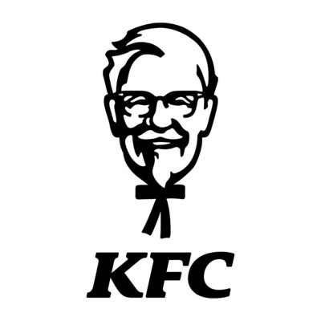

KFC

History of KFC:
KFC was founded by Colonel Harland Sanders, an entrepreneur who began selling fried chicken from his roadside restaurant in Corbin, Kentucky during the Great Depression. Sanders identified the potential of the restaurant franchising concept and the first "Kentucky Fried Chicken" franchise opened in Utah in 1952. KFC popularized chicken in the fast-food industry, diversifying the market by challenging the established dominance of the hamburger. By branding himself as "Colonel Sanders", Harland became a prominent figure of American cultural history and his image remains widely used in KFC advertising to this day. However, the company's rapid expansion overwhelmed the aging Sanders and he sold it to a group of investors led by John Y. Brown Jr. and Jack C. Massey in 1964.
Description:
KFC is an American fast food restaurant chain headquartered in Louisville, Kentucky that specializes in fried chicken. It is the world's second-largest restaurant chain (as measured by sales) after McDonald's, with 22,621 locations globally in 150 countries as of December 2019. The chain is a subsidiary of Yum! Brands, a restaurant company that also owns the Pizza Hut, Taco Bell and WingStreet chains.
Mascot:
Colonel Harland David Sanders (September 9, 1890 – December 16, 1980) was an American businessman, best known for founding fast food chicken restaurant chain Kentucky Fried Chicken (also known as KFC) and later acting as the company's brand ambassador and symbol. His name and image are still symbols of the company. The title "colonel" is an honorific title, the highest awarded by the Commonwealth of Kentucky, the Kentucky Colonel, and is not a military rank. The Governor of Kentucky bestows the honor of a colonel's commission, by issuance of letters patent.